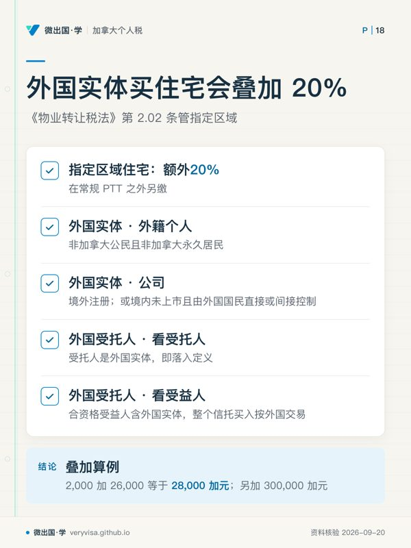
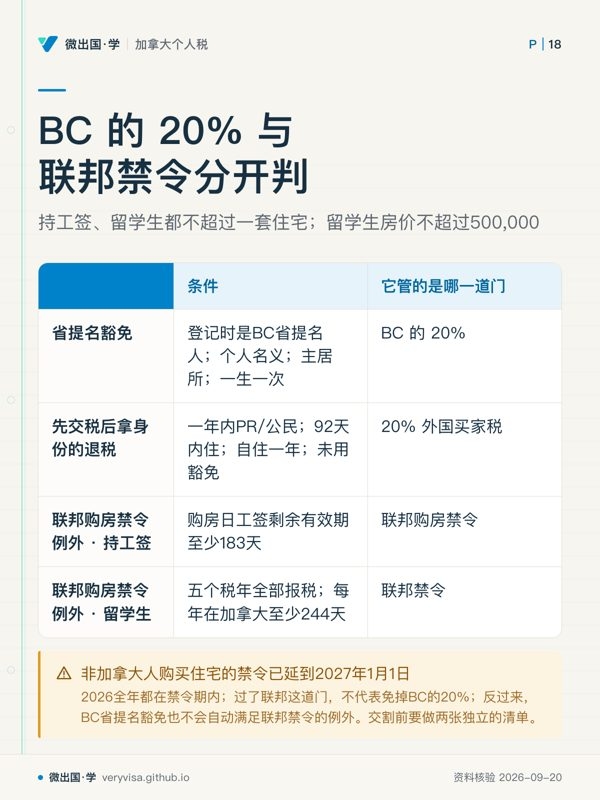

核实日期：2026-09-08｜现行口径：2026 税年（省与市两级申报，非联邦 T1）｜复核：2027-01-31（本页涉及的法定税率、豁免门槛与抵免额度每年均需按预算案与通胀索引核验）。 数值指向卑诗省财政厅（B.C. Ministry of Finance）、《不列颠哥伦比亚省物业转让税法》(Property Transfer Tax Act, RSBC 1996, c. 378)、《投机与空置税法》(Speculation and Vacancy Tax Act, SBC 2018, c. 46) 以及温哥华市官方现行附例。
在卑诗省购置、持有与转让不动产，纳税人面对的绝非一张简单的所得税申报表，而是一整套横跨交易行为、空置状态与短期投机处置的多维税制网。许多购房者与税务从业人员容易陷入两个认知盲区：一是把买房时交的物业转让税（Property Transfer Tax, PTT）误认为可以并入联邦个人所得税年度汇算；二是误以为只要买下的是自住房，就能无条件豁免一切省级与地方税负。事实恰恰相反，卑诗省对不动产交易与持有的调控极为严厉，从过户交收当天的一般累进转让税、针对高价值住宅的额外附加税、特定区域的 20% 外国买家附加税，到持有期间按年申报的投机与空置税（SVT）、温哥华市内独立的空置房屋税（EHT），再到短期持有即转让的卑诗翻炒税（BC Home Flipping Tax），每一项税种都拥有独立的税基定义、豁免阶梯与严格的申报举证责任。
本页旨在系统梳理 2026 税年卑诗省房产税制的完整体系。读完本页，你应该能够掌握四项核心专业能力：一是熟练运用 2026 税年分段费率精确计算一般物业转让税与 300 万加元以上豪宅附加税；二是清晰判定首次购房者（FTHB）与新建自住房豁免的临界区间，指出 835,000 加元与 1,100,000 加元门槛的递减归零机制；三是准确拆解 SVT、温哥华 EHT 与外国买家税的适用边界与最高抵免额度；四是厘清卑诗省翻炒税中主要居所转让享有的最高 20,000 加元扣除规则，防范合规申报中的重大疏漏。
34
一、制度设计与课税梯次：一次性交易税与按年持有税的分工
1.1 交易税与持有税的双轨逻辑
卑诗省的不动产税收体系在法理上被严密地划分为两大阵营：交易税（Transaction-based Taxes）与持有行为税（Holding/Behavioral Taxes）。
- 交易税以产权变更为纳税时点：以《物业转让税法》为代表的 PTT，在法律本质上属于对产权注册登记行为课征的间接税。买方在向卑诗省土地所有权与测量局（Land Title and Survey Authority of British Columbia, LTSA）递交不动产过户注册申请的当天，必须由过户律师或公证人完成税费代扣与清缴。无论买方未来是将房屋用作长期自住、亲属居住还是长期收租，一般 PTT 的纳税义务均在产权登记时一次性确立。
- 持有税以日历年度占用状态为课征基础：与交易税不同，投机与空置税（SVT）以及温哥华市空置房屋税（EHT）属于典型的行为调节持有税。其目的在于惩罚将宜居住宅长期闲置投机的业主，通过按年课税倒逼空置房屋进入长期租赁市场。即使业主在购房当年全额缴纳了 PTT，持有期间若无法满足连续合规自住或合资格出租测试，每年均会产生沉重的持有税负担。
- 短期处置税以持有天数判定投机性质：卑诗省翻炒税（BC Home Flipping Tax）是在联邦住宅翻炒规则（Residential Property Flipping Rule）之外另立的一部省税法——《Residential Property (Short-Term Holding) Profit Tax Act》（SBC 2024 c.14），专门针对买入后 730 天（2 年）内再次转让的住宅类资产利润实行阶梯式课税。它不是所得税的一部分：省财政厅写明它的申报与年度所得税申报分立，729 天内处置就要在 90 天内单独交表（BC 省政府、King's Printer, British Colu…）。
1.2 举证责任与独立申报原则
在联邦所得税制度下，纳税人通常享有「先自行申报、CRA 事后抽查」的行政宽限。然而在卑诗省的房产税制中，举证责任全方位倒置给业主： - 在 SVT 与温哥华 EHT 体制下，政府假定辖区内所有住宅物业均属于应税空置状态，业主必须在每年年初的法定申报窗口期内，主动登入政府系统完成声明（Declaration）。未在截止日前申报的，系统不会视为「无税」，而是直接按最高惩罚性税率出具税单并加收滞纳金。 - SVT 与温哥华 EHT 属于两级完全独立的政府管辖。温哥华市内的业主即便顺利完成了卑诗省 SVT 豁免申报，绝不意味着温哥华市的 EHT 申报可以免除；两份申报表必须分别填报，各自依据不同的附例标准核实入住天数。
二、物业转让税（PTT）分段费率与豪宅附加税
2.1 一般物业转让税的三级累进阶梯
在 2026 税年，卑诗省对所有未取得法定豁免的土地与住宅转让，继续实施严格的三级累进物业转让税结构（BC 省政府）。该税率完全按买卖标的公平市场价值（Fair Market Value, FMV）分段计算，并非全额套用最高边际费率：
- 首段上限 200,000 加元：房屋公平市场价值在 200,000 加元及以下的部分，适用税率为 1%。这一阶段的最高应纳税额为 $200,000 \times 1\% = \$2,000$。
- 第二段上限 2,000,000 加元：房屋公平市场价值超过 200,000 加元至 2,000,000 加元的部分，适用税率为 2%。这一区间的跨度为 1,800,000 加元，区间最高应纳税额为 $1,800,000 \times 2\% = \$36,000$。
- 第三段超过 2,000,000 加元部分：房屋价值超过 2,000,000 加元的部分，适用税率为 3%。
如果一套普通商业或住宅类物业的市场价值为 2,500,000 加元，其基础 PTT 的计算过程为： - 首 200,000 加元：$\$200,000 \times 1\% = \$2,000$； - 200,000 至 2,000,000 加元部分：$\$1,800,000 \times 2\% = \$36,000$； - 2,000,000 至 2,500,000 加元部分：$\$500,000 \times 3\% = \$15,000$； - 合计基础 PTT 额度为 $\$2,000 + \$36,000 + \$15,000 = \$53,000$。
2.2 300 万加元住宅额外附加税（Further 2% on Residential Property）
为了抑制高端豪宅市场的资本炒作，卑诗省对住宅类不动产设立了第四档累进加征机制： - 住宅额外税起点 3,000,000 加元：当转让的物业包含住宅（Class 1 Residential Property）且总公平市场价值超过 3,000,000 加元时，超过 3,000,000 加元的住宅部分价值，必须在常规 3% 的基础上额外加征 2% 的物业转让税，使得该区间的实际边际税率达到 5%（BC 省政府）。
案例推演：假设纳税人在 2026 税年在西温哥华购入一套价值 4,500,000 加元的单一独立屋住宅，其物业转让税总额计算如下： - 首 200,000 加元：$\$200,000 \times 1\% = \$2,000$； - 200,000 至 2,000,000 加元：$\$1,800,000 \times 2\% = \$36,000$； - 2,000,000 至 3,000,000 加元：$\$1,000,000 \times 3\% = \$30,000$； - 超过 3,000,000 加元至 4,500,000 加元部分（共 1,500,000 加元）：适用 $3\% + 2\% = 5\%$ 的综合税率，税额为 $\$1,500,000 \times 5\% = \$75,000$； - 该买家在过户登记当天必须向省财政厅清缴的 PTT 总税额为 $\$2,000 + \$36,000 + \$30,000 + \$75,000 = \$143,000$。
2.3 另一种「豪宅附加」：按年交的附加学校税，不是 PTT
300 万这条线在卑诗还出现在另一张税单上：附加学校税（additional school tax）。它是每年随地税征收的物业税，只对住宅评估值超过 300 万的部分课，前 300 万不课；它和上面过户时一次性交的「额外 2%」是两笔钱（BC 省政府）。
| 住宅评估值区段 | 2026 税年 | 2027 税年起 | 状态 |
|---|---|---|---|
| 300 万至 400 万部分 | 0.2% | 0.3% | 2026 现行；2027 税率由 Budget 2026 公布，省府税率页已列为 2027-01-01 起适用 |
| 超过 400 万部分 | 0.4% | 0.6% | 同上 |
同样是一套 450 万的独立屋，买的那天交一次 PTT 额外 2%（只算超过 300 万的住宅部分）；此后每年地税单上还有附加学校税。2027 年起这一项的税率提高一半（BC 省政府）。
三、首次购房者与新建住宅豁免规则
为了缓解初次置业家庭的买房负担，卑诗省财政厅在《物业转让税法》下分别设立了「首次购房者计划」（First Time Home Buyers' Program, FTHBP）与「新建自住住宅豁免」（Newly Built Home Exemption）。这两项计划在 2024 年春季预算案中迎来历史性的大幅度门槛上调，并作为 2026 税年的现行基准继续执行（BC 省政府（1、2）、www2.gov.bc.ca）。
3.1 首次购房者计划（FTHBP）的核心门槛与递减阶梯
首次购房者免税计划专为购买二手或存量住宅自住的加拿大公民或永久居民设立。必须同时满足身份要求、在卑诗省连续居住满 12 个月或过往 6 年内递交过至少 2 次卑诗个人税表、以及此前在全球任何地方均未拥有过主居所产权的严苛条件。

在 2026 税年，首次购房者计划的关键数值界限如下： 1. 不递减资格房价门槛 835,000 加元：在 2024 年预算案之前，全额豁免的门槛长期停留在 500,000 加元。现行法律明确规定，只要合资格住宅的公平市场价值不超过 835,000 加元，买方即可获得全额法定免税额度。 2. 首次购房最多免税对应价值 500,000 加元与最高 PTT 豁免税额 8,000 加元：法定豁免的税额并不是对整套房屋免税，而是免除房屋价值中前 500,000 加元所对应的全部物业转让税。按照基础 PTT 阶梯计算： $$\text{首段 } \$200,000 \times 1\% = \$2,000$$ $$\text{次段 } \$300,000 \times 2\% = \$6,000$$ $$\text{合计最高免税额 } = \$2,000 + \$6,000 = \$8,000$$ 因此，当首次置业者购买一套价值刚好为 835,000 加元的房屋时，其基础 PTT 本应为 $\$2,000 + (\$835,000 - \$200,000) \times 2\% = \$14,700$。扣减最高法定豁免额 8,000 加元后，买方实际只需缴纳 $\$14,700 - \$8,000 = \$6,700$。 3. 资格递减归零房价 860,000 加元：如果房屋的购买价格或公平市场价值处于 835,000 加元至 860,000 加元之间，豁免资格并不立即丧失，而是进入一段长度为 25,000 加元的线性递减缓冲带。豁免额按比例计算： $$\text{可用豁免额} = \$8,000 \times \left( \frac{\$860,000 - \text{实际成交价}}{\$860,000 - \$835,000} \right)$$ 一旦房屋成交价格达到或超过 860,000 加元，递减公式计算结果归零，买方将彻底丧失首次购房者免税资格，必须按照常规 PTT 分段费率全额缴纳税款。
3.2 新建自住住宅豁免（Newly Built Home Exemption）
针对向开发商购买全新建成的公寓、城市屋或独立屋作为主要居所的买家，卑诗省提供了更加宽裕的免税额度，以鼓励住宅建设增加市场供给： 1. 新建房全额 PTT 豁免房价上限 1,100,000 加元：购买新房且作为主要居所的合资格买家，若房屋公平市场价值在 1,100,000 加元及以下，享受 100% 全额免交 PTT 的税收优惠（BC 省政府）。对于一套 110 万加元的新建房屋，其常规 PTT 本应高达 $\$2,000 + \$900,000 \times 2\% = \$20,000$，全额豁免为购房家庭直接节省了两万加元的交割现金成本。 2. 新建房 PTT 豁免归零房价 1,150,000 加元：当新建房屋价值介于 1,100,000 加元至 1,150,000 加元之间时，豁免额度在 50,000 加元的区间内逐步递减： $$\text{递减比例} = \frac{\$1,150,000 - \text{实际价格}}{\$50,000}$$ 当新房成交价格达到或超过 1,150,000 加元时，免税额度完全归零，买方必须全额缴纳全部 PTT。
四、特定区域外国买家附加物业转让税（Additional PTT）
在卑诗省的大温哥华区域、省府维多利亚周边首都地区、弗雷泽河谷地区、中奥肯那根以及纳奈莫等指定高密度区域，不动产交易还受到外国买家税的强力调控（BC 省政府）。
4.1 20% 外国实体附加税率
根据《物业转让税法》第 2.02 条，任何在指定区域内转让的住宅类不动产，若买方属于外国实体（Foreign Entity）或外国受托人（Foreign Trustee），必须在常规 PTT 之外，额外缴纳高达 20% 的附加物业转让税（Additional Property Transfer Tax）： - 外国实体定义：包括非加拿大公民且非加拿大永久居民的个人（即外国国民）、在加拿大境外注册成立的公司、或者虽然在加拿大境内成立但由外国国民直接或间接控制的未上市私人公司。 - 外国受托人定义：如果信托的受托人是外国实体，或者信托协议下的合资格受益人包含外国实体，整个信托买入房产均被定性为外国交易。
税负叠加冲击：假设一名持工签的外籍人士（购房日工签剩余有效期超过 183 天、只买这一套住宅，符合联邦购房禁令的工签例外），尚未取得 BC 省提名，以 1,500,000 加元买入本拿比的一套住宅自住： - 常规 PTT：$\$200,000 \times 1\% + \$1,300,000 \times 2\% = \$2,000 + \$26,000 = \$28,000$； - 20% 外国买家税：$\$1,500,000 \times 20\% = \$300,000$； - 买方在产权交收过户时必须一次性支付的省级税款高达 $\$328,000$，税费占房屋标的价值的 21.87%。
4.2 豁免、退税与联邦购房禁令：三件事分开判
省提名豁免只有一次，而且只看登记那一天。 外籍个人要免这 20%，登记过户时必须已经是确认的 BC 省提名人，以个人名义买、作为自己的主居所，一生只能用一次；配偶若也是外籍人士而不是提名人，他名下那一份照征 20%。只持工签、学签，或还在创业移民候选阶段，都不等于省提名人（BC 省政府）。
先交了税、之后拿到身份的，可以申请退税，但条件是连环的。 必须同时满足：登记后一年内成为永久居民或公民（以 COPR 或 PR 卡上的日期为准）、登记后 92 天内入住、此后连续自住满一整年、没有用过省提名豁免；申请窗口在入住满一年之后、登记满 18 个月之前，用 FIN 274 表（BC 省政府）。省府页面自己提醒：指望这笔退税去买房，等于承担「一年内拿不到身份」的风险。
联邦购房禁令是另一道门，交税也过不去。 联邦对非加拿大人购买住宅的禁令已延到 2027 年 1 月 1 日，2026 全年都在禁令期内（加拿大财政部）。临时居民的两条例外，条件完全不同（SOR-2022-250 s.5，加拿大联邦法规库）：
| 身份 | 联邦禁令例外的条件 |
|---|---|
| 持工签 | 购房日工签剩余有效期至少 183 天，且不超过一套住宅 |
| 留学生 | 购房前五个税年全部报税、每年在加拿大至少 244 天、房价不超过 500,000，且不超过一套住宅 |
过了联邦这道门，不代表免掉 BC 的 20%；反过来，BC 省提名豁免也不会自动满足联邦禁令的例外。交割前要做两张独立的清单。
五、持有期与处置期防投机联动：SVT、温哥华 EHT 与翻炒税
5.1 卑诗省投机与空置税（SVT）的税率与居民抵免
卑诗省投机与空置税（Speculation and Vacancy Tax）是一项按日历年度对指定应税区域内未满足合规占用条件的住宅征收的省级持有税（BC 省政府（1、2））。在 2026 税年，其核心要素包括：
- 合资格公民与永久居民通常税率 1%：对于属于加拿大公民或永久居民、且不属于未申报全球收入卫星家庭的业主，若其持有的非主要居所住宅在一年内未能满足法定出租天数（通常要求每年累计出租满 6 个月），其 SVT 现行法定通常税率为 1%（2024 税年与 2025 税年该基准税率为 0.5%，自 2026 税年起提升至 1%）。
- 外国业主与卫星家庭通常税率 3% 至 4%：对于外国国民、外国公司、以及虽然具有本地身份但家庭全球收入主要来自海外且未在加拿大纳税的「未申报全球收入家庭」（Satellite Families），未充分占用的住宅适用更加惩罚性的税率：2024 及 2025 税年税率为 2%，2026 税年上调至 3%，并按法定时间表在 2027 税年推进至 4%。
- 卑诗居民最大 SVT 税收抵免 4,000 加元：为了保护在卑诗省工作纳税、但因特殊家庭原因持有第二套无法出租物业的本地居民，卑诗省税法允许合资格居民申报一项最高 4,000 加元的 SVT 抵免额（2024 与 2025 税年该抵免额度上限为 2,000 加元，2026 税年翻倍至 4,000 加元）。由于本地居民适用税率为 1%，该项 4,000 加元的抵免额度意味着居民名下价值在 400,000 加元以内的空置住宅部分可实现全额抵消。
- 申报纪律：不申报的业主，SVT 法 s.18 一律按 3% 计税，不看公民或永久居民身份（King's Printer, British Colu…）；Budget 2026 另公布：自 2027 年 1 月 1 日起的税年，未在 3 月 31 日前申报者加收 250 元不可退罚款，业主自己申报「无豁免适用」而产生的评税不能申诉（BC 省政府（1、2））。
5.2 温哥华市空置房屋税（Empty Homes Tax, EHT）
温哥华市内房产业主必须时刻牢记市政税收与省级税收的彻底独立（vancouver.ca）： - 现行税率 3%：温哥华市根据《温哥华章程》（Vancouver Charter）设立的空屋税，自 2021 参考年度历经调整后，现行执行税率稳定在 3%，完全以温哥华市不动产评估总值（BC Assessment Value）为税基计算。 - 申报口径差异：卑诗省 SVT 是按每名产权人（Per Owner）单独申报，即使夫妻联名也需各自填报一份并核算各自的身份与免税资格；而温哥华市 EHT 是按每处不动产物业（Per Property）申报，由指定业主代表该套房产提交一份房屋占用声明。两套系统各自运行、各下税单，切不可因申报了一处而遗漏另一处。
5.3 卑诗省翻炒税主要居所扣除（BC Home Flipping Tax）
自 2025 年起生效并在 2026 税年常态化运行的卑诗省翻炒税，针对买入后持有时长在 730 天（2 年）以内的住宅物业转让利润征收阶梯式税收（持有时长越短税率越高，首年最高税率可达 20%）（BC 省政府）。 - 主要居所扣除最高额 20,000 加元：在法规设定的多项因离婚、伤残、工作异地调动等非自愿生活变故豁免之外，省税法对出售自住主要居所另给一笔扣除：持有满 365 个连续日、且持有期间该房一直是本人主要居所，才可从应税翻炒利润中扣最高 20,000 加元（Primary Residence Deduction）；持有不足 365 天、税率 20% 的那一段拿不到，楼花合同转让也不适用（BC 省政府）。这笔扣除只减少税基，不是豁免——超过 20,000 的利润仍按持有天数对应的税率课税。
六、综合案例推演与实务避坑指南
为了帮助学员与税务专业人士建立立体化的风控意识，以下通过一个典型综合案例串联全页知识点：
实务案例：张先生为加拿大永久居民，在温哥华全职工作并如实申报全球收入。张先生此前从未在全球置业。2026 年 5 月，张先生以 850,000 加元的公允市场价格购入温哥华市内一套二手公寓作为个人主要居所并实际入住。试分析张先生在购房交易、持有与潜在处置中的税务责任：
- 物业转让税（PTT）计算：
- 基础 PTT 测算：首段 $\$200,000 \times 1\% = \$2,000$；超出部分 $\$650,000 \times 2\% = \$13,000$；常规税额合计 $\$15,000$。
- 首次购房者（FTHBP）资格裁定：850,000 加元处于 835,000 加元至 860,000 加元的递减区间。
- 递减豁免额测算： $$\text{可用豁免比例} = \frac{\$860,000 - \$850,000}{\$860,000 - \$835,000} = \frac{\$10,000}{\$25,000} = 40\%$$ $$\text{实际减免额} = \$8,000 \times 40\% = \$3,200 \quad (\text{})$$
- 张先生过户当天实缴 PTT：$\$15,000 - \$3,200 = \$11,800$。
- 外国买家附加税：张先生为加拿大永久居民，不属于外国实体，无需缴纳 20% 附加税。
- 持有期间 SVT 与温哥华 EHT：
- 张先生必须在 2027 年初分别登入卑诗省府门户与温哥华市政门户完成两份独立申报。
- 只要张先生在该公寓内实际作为主要居所连续居住，SVT与温哥华市 3% 的 EHT均能取得 100% 全额豁免；即使因特殊原因发生短暂空置，张先生作为本地合资格居民还拥有最高 4,000 加元的 SVT 税收抵免提供防线。
- 短期转让与翻炒税主要居所扣除：若张先生入住 14 个月后因个人规划卖出该房并获利 50,000 加元，在未满足法定变故豁免的情形下，其应税翻炒所得可依法先扣减最高 20,000 加元的主要居所扣除额，仅就剩余的 30,000 加元依持有期递减税率核算翻炒税。
通过上述制度联动，可以看出卑诗省不动产税制环环相扣。从业人员必须严格区分交易税的分段与递减界线，准确掌握持有税的申报时限与抗辩标准，方能在复杂的实务环境中保护纳税人的合法权益，确保合规与节税双重达标。
本页知识卡
不看正文也能拿到这一节的核心内容：先看导读，再看图。点图放大，左右翻页。
- 先看先把成交价值切成区间，再把各段应纳额相加。
- 易漏进入较高边际档，不代表此前价款也改按更高比例计征。
- 下一步去练习复核分档；请持牌专业人士确认成交估值口径。

- 先看先核受让方身份，再核所在地是否触发省级附加征收。
- 易漏本拿比 1,500,000 加元自住例：过户省级税款达 328,000 加元，占房屋标的价值 21.87%。
- 下一步去知识卡核对归类；签约前请持牌律师审查受让结构。

- 先看先从右栏判断是在看省级税款还是联邦禁令，再回到条件。
- 易漏省府页面自己提醒：指望这笔退税去买房，等于承担「一年内拿不到身份」的风险。
- 下一步去练习把登记日与购房日分开核对，再带身份问题找持牌专业人士。